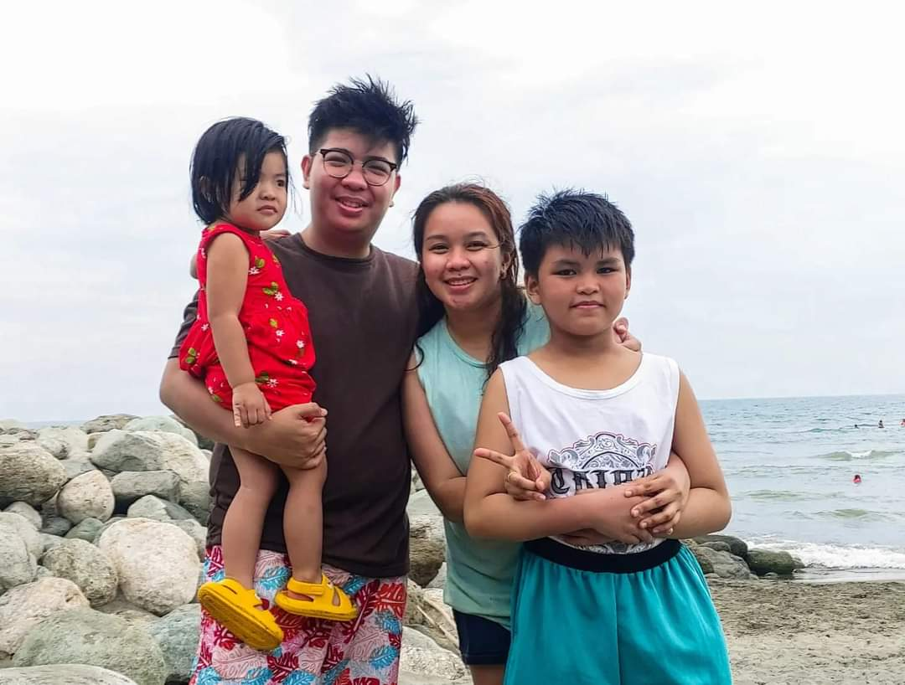
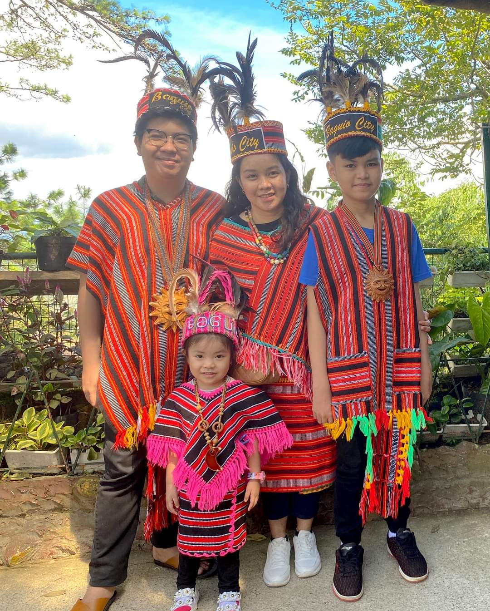
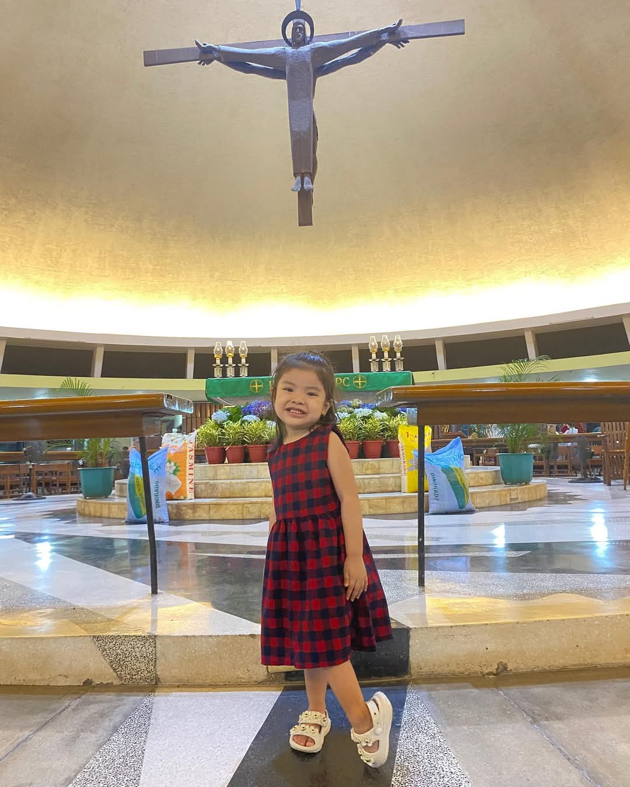
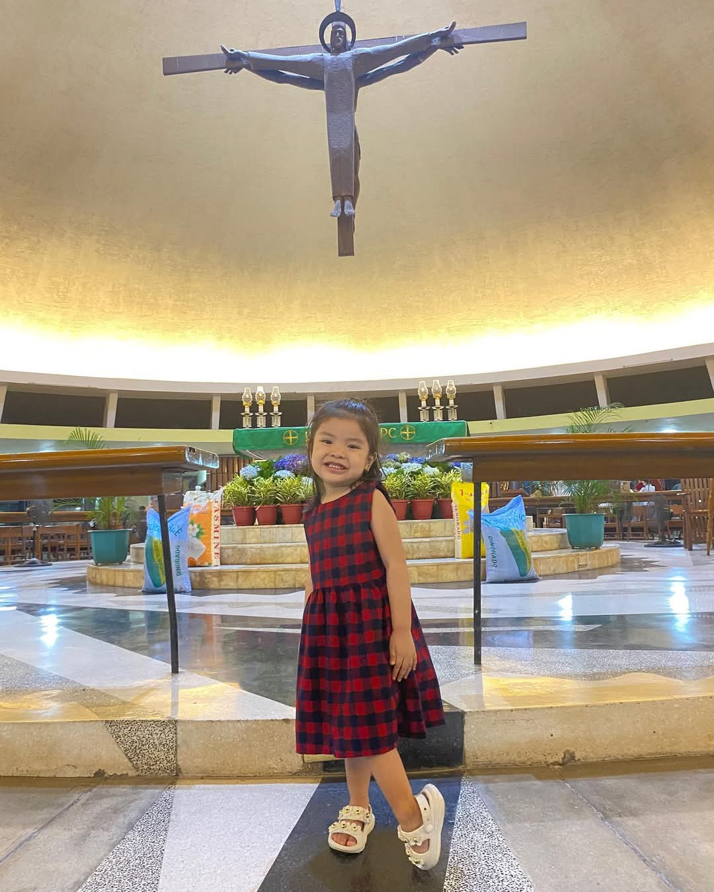
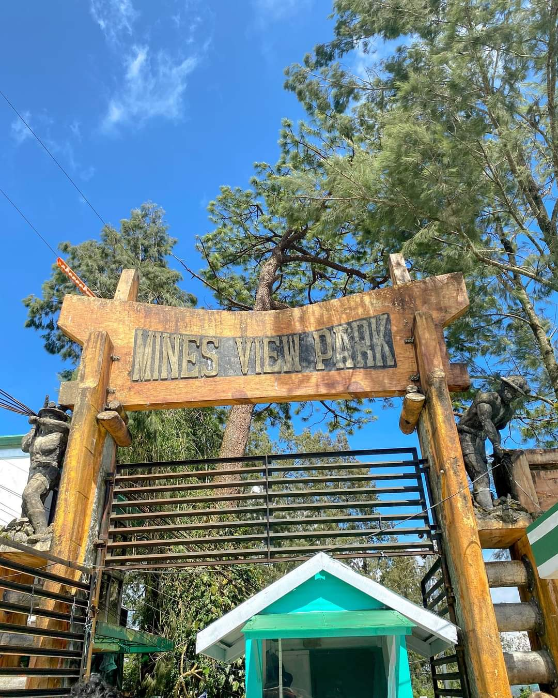
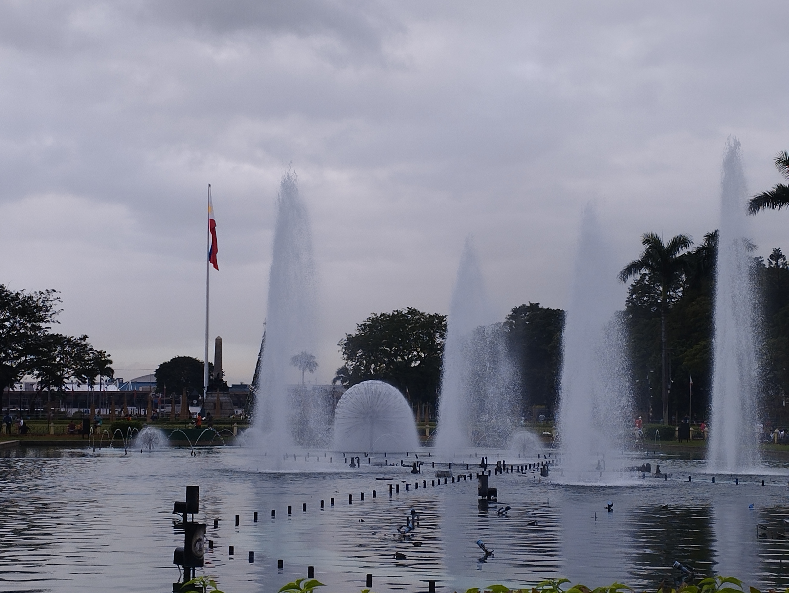
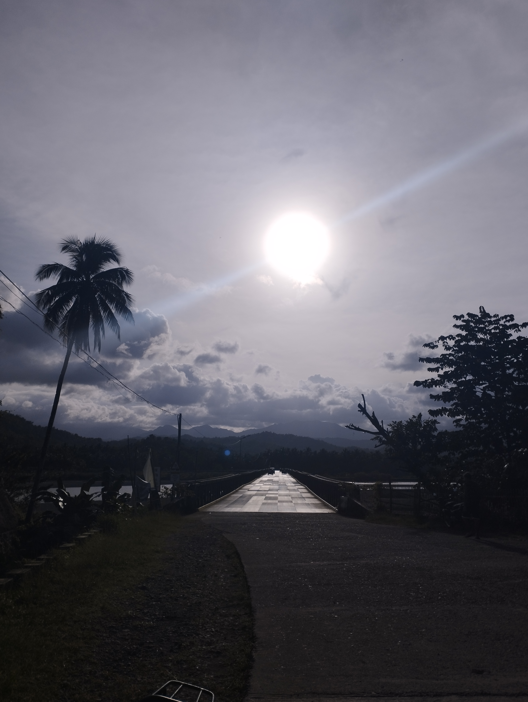
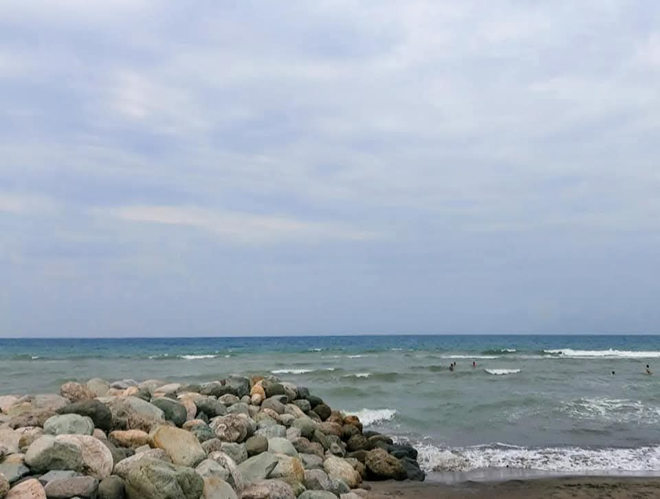
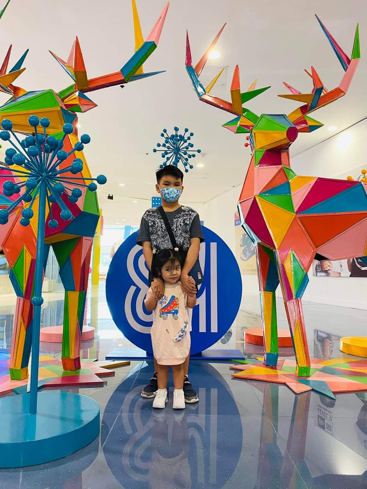

About Me
My name is Jake Laurence Nemis, Im currently 14 years old and i lived in Caloocan City while my parents are at Quezon City. Who are my family members? it's just like a normal family in the past or the current generation. My mother's name is Princess T. Nemis while my step father's name is Kenneth Paul G. Mararac. And lastly my sibling, her name is Veronica Anne Louise.
  

What do i do throughout my life?
Academically, I have pursued a path that reflects my diverse interests. From an early age, I was drawn to subjects that challenged my thinking and encouraged me to solve problems creatively. My education has provided me with a solid foundation in critical thinking, analytical reasoning, and effective communication—skills that I believe are essential in today’s world. I have always been dedicated to academic excellence, and I see learning as a lifelong pursuit, not something that ends with formal education.One of the key principles I live by is the value of continuous improvement. I believe that no matter where we are in life, there is always room for growth. This mindset drives me to seek out new opportunities to learn, whether through professional development, taking on new projects, or simply being open to feedback. I enjoy taking on challenges that push me beyond my comfort zone, as they often lead to the most significant personal and professional growth.In addition to my work and studies, I value balance in life. I believe it is essential to have time for personal interests and hobbies, as they provide a creative outlet and a way to recharge. These activities, whether they are intellectual or leisurely, allow me to stay grounded and maintain a fresh perspective on both work and life. I enjoy activities that promote mindfulness and help me stay connected to the present moment, such as spending time outdoors, reading, or engaging in physical fitness.Throughout my life, I have also placed a strong emphasis on building positive relationships. I believe that the connections we form with others are one of the most important aspects of life. Whether through collaboration in a professional setting or sharing personal experiences with friends and family, I seek to foster relationships based on mutual respect, open communication, and empathy. Looking ahead, I am excited about the possibilities that lie in the future.
  
My Life Motto
I am motivated to continue growing, both as an individual and as a professional, and to seek out opportunities that align with my values and aspirations. I believe in approaching each new challenge with optimism and determination, confident that every experience contributes to my journey of self-improvement and success. 
That's all Thank you for Reading
